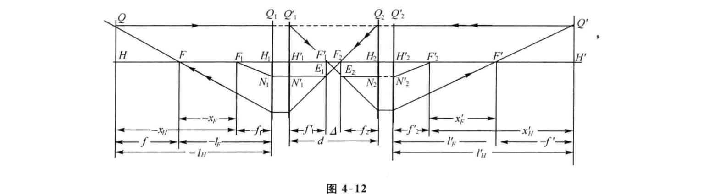
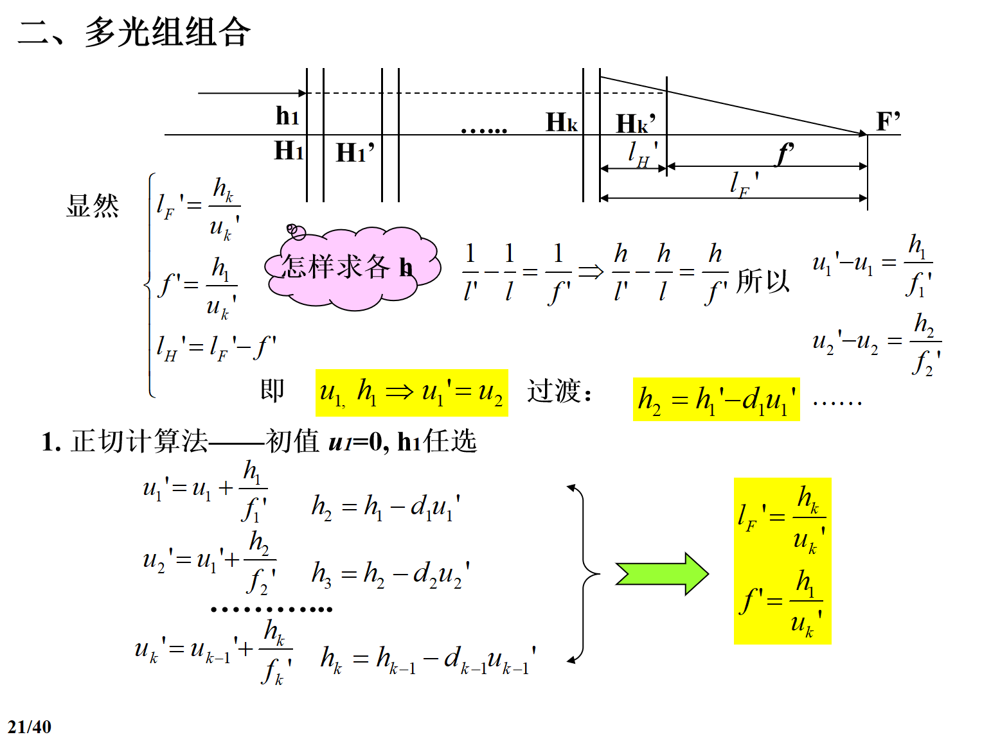

Chapter 4¶
一、牛顿公式¶
 由三角形相似可导出
$$
xx'=ff'
$$
由三角形相似可导出
$$
xx'=ff'
$$
$$ \beta=\frac{y'}y=-\frac{x'}{f'}=-\frac fx $$ 这是以焦点为原点的物像公式和相应的横向放大率公式，也称牛顿公式
二、高斯公式¶
代入 $$ x=l-f,x'=l'-f' $$ 可得 $$ \frac{f'}{l'}+\frac fl=1 $$
由高斯公式可得 $$ \frac{n'f'}{n'l'}+\frac {nf}{nl}=1 and -\frac{f'}{f}=\frac {n'}n $$ 推出 $$ \frac{n'}{l'}-\frac nl=\frac{n'}{f'}=-\frac{n}{f} $$ 当\(n'=n\)时 $$ \frac{1}{l'}-\frac 1l=\frac{1}{f'}=-\frac{1}{f} $$
三、理想光学系统两焦距的关系和拉氏公式¶
理想光学系统的拉式公式 $$ nytanU=n'y'tanU' $$ 对近轴区有 $$ nyu=n'y'u'\tag{3-1} $$ 利用相似三角形可得 $$ yftgU=-y'f'tgU $$ 对于近轴区 $$ yfu=-y'f'u'\tag{3-2} $$ 联立3-1和3-2可以推出 $$ \frac{f'}{f}=-\frac {n'}n $$ 若包含k个反射面 $$ \frac{f'}{f}=(-1)^{k+1}\frac {n'}n $$
四、光束的汇聚度和系统的光焦度¶
- 折合物距：\(\frac ln\)
- 折合像距：\(\frac {l'}{n'}\)
- 折合焦距：\(\frac {f'}{n'}\)
前两者取倒数得到汇聚度\(V,V'\),正数表示光束会聚，负数表示发散光束
后者取倒数得到光焦度\(\Phi\),正数表示起会聚作用，负数表示发散作用 $$ V'-V=\Phi $$
五、轴向放大率、角放大率其与横向放大率的关系¶
1. 轴向放大率¶
两边求微分 $$ xdx'+x'dx=0 $$
当\(n=n'\)时，\(\alpha=\beta^2\),立体物像不再相似
2. 角放大率¶
如果\(n'=n\)，\(Y=\frac 1\beta\)
六、薄透镜在特殊位置的成像¶
正透镜成像 负透镜成像

七、理想光学系统的图解求像¶
- 平行于光轴的光线经理想光学系统后必通过像方焦点；
- 过物方焦点的光线经理想光学系统后必为平行于光轴的光线
- 过节点的光线方向不变
- 任意方向的一束平行光经理想光学系统后必交于像方焦平面上一点
- 过物方焦平面上一点的光线经理想光学系统后必为一束平行光。
- 主面交点光线高度相同
八、光学系统的组合¶
 两种计算方法：
- 正切计算法 
- 截距计算法
四组公式： $$ X_F'=-\frac{f_2f_2'}{\bigtriangleup} $$ $$ X_F=\frac{f_1f_1'}{\bigtriangleup} $$ $$ f'=-\frac{f_1'f_2'}{\bigtriangleup} $$ $$ f=\frac{f_1f_2}{\bigtriangleup} $$ $$ \bigtriangleup=d-f_1'+f2 $$
注：这些公式与光组是否在空气中无关
一般光组在空气中，可得\(f'=-f\) $$ f'=\frac{f_1'f_2'}{f_1'+f_2'-d} $$
复杂光学系统各光组光焦度对总光焦度的贡献 $$ \phi=h_1\sum_{1}^kh_i\phi_i $$
九、望远镜系统¶
定义：以平行光入射，再以平行光出射的系统
1. 放大率¶
如下： $$ \beta=\frac{f_2}{f_1'} $$ $$ \alpha=\frac{f_2f_2'}{f_1f_1'} $$ $$ \gamma=\frac{f_1}{f_2'} $$
2. 视觉放大率¶
3. 讨论¶
-
要求主观放大，即\(\Gamma = \gamma > 1\)，即\(|f_1'| > |f_2'|\)
-
一般要求\(f_1' > 0\)，\(f_2'\)可正可负
- \(f_2' > 0\)，成倒像，观察不便，但便于测量，必要时加倒像系统
- \(f_2' < 0\)，成正像，用于观察，但无实像面，不能测量
-
当\(|f_1'| > |f_2'|\)时 $$ |\beta| < 1 \tag{物经望远镜成缩小像} $$ $$ |\alpha| \ll 1 \tag{但距离拉近很多} $$ $$ |\Gamma| = |\gamma| > 1 \tag{对眼睛的张角变大} $$
-
系统一定，则\(\beta, \alpha, \gamma\)为定值，与物距\(l\)无关
十、透镜¶
1. 薄透镜¶
薄透镜：\(H, H'\)重合，\(J, J'\)重合，\(f = -f'\)
对薄透镜的两个球面运用高斯公式可得 $$ \frac{1}{l'} - \frac{1}{l} = \frac{1}{f'} $$ $$ \phi = \frac{1}{f'} = (n - 1) \left( \frac{1}{r_1} - \frac{1}{r_2} \right) $$ 放大率 $$ \beta = \beta_1 \beta_2 = \frac{l'}{l} = \frac{u}{u'} $$ $$ \alpha = \beta^2 $$ $$ \gamma = \frac{1}{\beta} $$ 共轭距 $$ L = |l' - l| = \left| \left( 2 - \beta - \frac{1}{\beta} \right) f' \right| $$
2. 厚透镜¶
- 双凸透镜
- 当\(d < \left|\frac{n(r_2 - r_1)}{n - 1}\right|\)时，是正透镜，主面在内
- 当\(d = \left|\frac{n(r_2 - r_1)}{n - 1}\right|\)时，是望远镜，无焦系统
- 当\(d > \left|\frac{n(r_2 - r_1)}{n - 1}\right|\)时，是负透镜，主面在外
- 当\(d = r_1 - r_2\)时，主面重合于球心
- 双凹透镜
- 不管\(d\)怎么变，\(f' < 0\)恒成立，主面也总在内部
- 平凸透镜
- \(f' > 0\)，且与\(d\)无关，\(l_H = 0, l_{H'} = -\frac{d}{n}\)
- 平凹透镜
- \(f' < 0\)，且与\(d\)无关，\(l_H = 0, l_{H'} = -\frac{d}{n}\)
- 弯月型凸透镜
- \(f' > 0\)，\(H\)在\(H'\)之前，且在透镜之外；\(H'\)也可能位于透镜之外
- 弯月型凹透镜
- 当\(d < \left|\frac{n(r_2 - r_1)}{n - 1}\right|\)时，是负透镜
- 当\(d = \left|\frac{n(r_2 - r_1)}{n - 1}\right|\)时，是望远镜，无焦系统
- 当\(d > \left|\frac{n(r_2 - r_1)}{n - 1}\right|\)时，是正透镜
- 当\(d = r_1 - r_2\)时，主面重合于球心